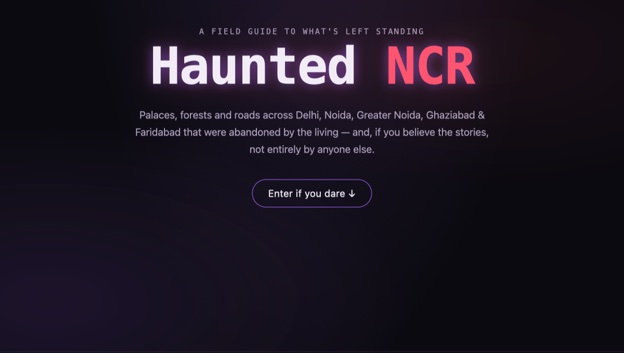
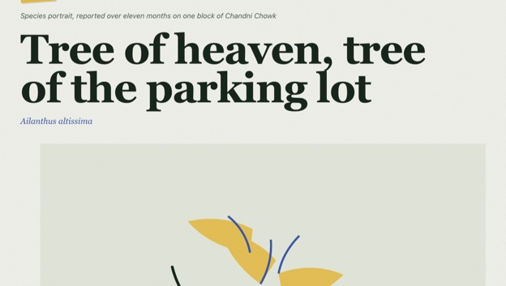

Data Exploration in SQL
Data exploration of the COVID-19 dataset using SQL.
Welcome to my portfolio — a showcase of my data analytics work built using Python, SQL, Excel and Tableau. I'm passionate about turning raw data into smart, actionable insights that drive decisions.
See my work →Turning raw data into actionable insights using modern analytics tools.
| data-prep | Cleaning, transforming and querying data using SQL to build solid foundations for analysis. |
| analysis | Analyzing trends and uncovering insights with Python and Excel to support business decisions. |
| visualization | Building interactive dashboards in Power BI and Tableau to clearly communicate results. |
Turning data into meaningful stories through analysis and visualization.
Data exploration of the COVID-19 dataset using SQL.

Dashboards analyzing data like COVID-19, road accidents and more.

Bank loan analysis using Python based on how banks approve loans.

Raw housing data transformed in SQL Server to make it more usable for analysis.

What variables affect the gross revenue from movies, explored using Python.
Full front-end builds — HTML, CSS and JavaScript, deployed and live.

An interactive field guide to abandoned and haunted places across Delhi NCR — sourced history, real photos with attribution, live Google Maps embeds, and a spooky custom UI.

A magazine-style blog cataloguing "volunteer" plants — the trees and weeds that seed themselves into cracks, parking lots and forgotten corners of Indian cities.
Feel free to reach out through any of the channels below.
| vanshty33 [at] gmail [dot] com | |
| address | Noida, Uttar Pradesh, India |
| linkedin.com/in/yourprofile | |
| github | github.com/vansh-168 |